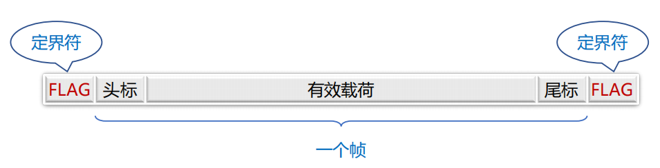
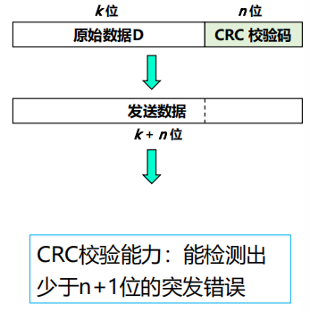
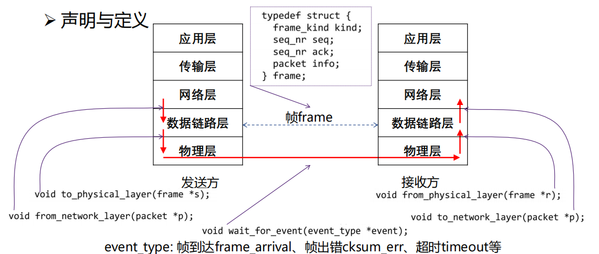
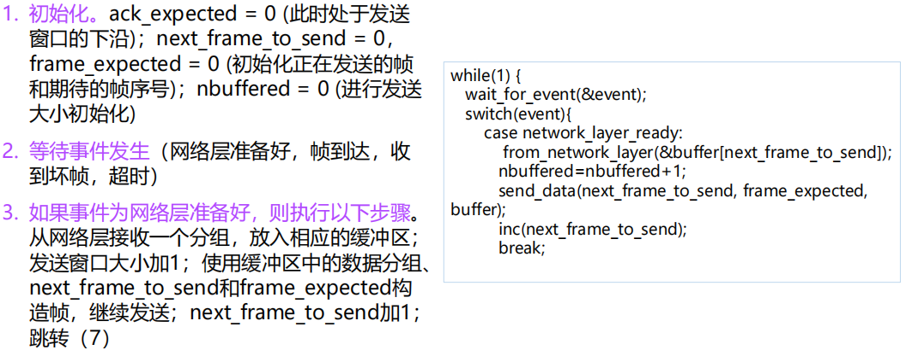
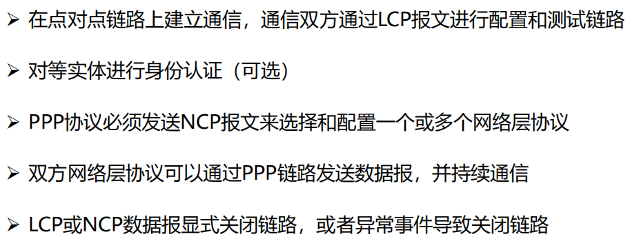

Data Link Layer
约 6445 个字 62 张图片 预计阅读时间 43 分钟
数据链路层的设计问题
数据链路层在协议栈中的位置
- 向下：利用物理层提供的位流服务
- 向上：向网络层提供明确的 (well-defined) 服务接口
数据链路层的功能
- 成帧 （Framing）
- 将比特流划分成“帧”的主要目的是为了检测和纠正物理层在比特传输中可能出现的错误，数据链路层功能需借助“帧”的各个域来实现
- 差错控制 （Error Control）
- 处理传输中出现的差错，如位错误、丢失等
- 流量控制 （Flow Control）
- 确保发送方的发送速率，不大于接收方的处理速率
- 避免接收缓冲区溢出
- 确保发送方的发送速率，不大于接收方的处理速率
数据链路层提供的服务
- 无确认 无连接 服务（ Unacknowledged connectionless ）
- 接收方不对收到的帧进行确认
- 适用场景：误码率低的可靠信道；实时通信
- 网络实例：以太网
- 有确认 无连接 服务（ Acknowledged connectionless ）
- 每一帧都得到单独的确认
- 适用场景：不可靠的信道（无线信道）
- 网络实例：802.11
- 有确认 有连接 服务（ Acknowledged connection-oriented ）
- 适用场景：长延迟的不可靠信道
成帧（Framing）
- 分组 (packet) 与 帧(frame)的关系
-
关键问题：如何标识一个帧的开始？
- 接收方必须能从物理层接收的比特流中明确区分出一帧的开始和结束，这个问题被称为帧同步或帧定界
- 关键：选择何种定界符？定界符出现在数据部分如何处理？
-
成帧（framing）的方式
- 字节计数法（ Byte count ）
- 带字节填充的定界符法（ Flag bytes with byte stuffing ）
- 带比特填充的定界符法（ Flag bits with bit stuffing ）
- 物理层编码违例（ Physical layer coding violations ）
-
字节计数法
无差错传输的情形
- 问题：如果某个计数字节出错会发生什么情况？
出现了一个字节差错的情形
破坏了帧的边界，导致一连串帧的错误。
 如果出现一处错误，后续都会错误，因此实际中基本没有被使用。
如果出现一处错误，后续都会错误，因此实际中基本没有被使用。 -
带字节填充的定界符法
- 定界符（FLAG）：一个特殊的字节，比如 01111110，即 0x7E，用于区分前后两个不同的帧
 - 发送方检查有效载荷，进行字节填充
- 接收方的处理
- 逐个检查收到的每一个字节
- 收到ESC：则后一字节无条件成为有效载荷，不予检查
- 收到FLAG：则为帧的边界
- 示例
- 带字节填充的定界符法的不足：Overhead 较大，不是数据本身的内容占据的太多
- 定界符（FLAG）：一个特殊的字节，比如 01111110，即 0x7E，用于区分前后两个不同的帧
-
带比特填充的定界符法
- 定界符：两个0比特之间，连续6个1比特，即01111110，0x7E
 如果有效载荷部分包含与“定界符”相同的位组合如何解决？
如果有效载荷部分包含与“定界符”相同的位组合如何解决？ - 发送方检查有效载荷
- 若在有效载荷中出现连续5个1比特，则直接插入1个0比特

- 若在有效载荷中出现连续5个1比特，则直接插入1个0比特
- 接收方的处理
- 若出现连续5个1比特
- 若下一比特为0，则为有效载荷，直接丢弃0比特
- 若下一比特为1，则连同后一比特的0，构成定界符，一帧结束
- 定界符：两个0比特之间，连续6个1比特，即01111110，0x7E
-
物理层编码违例
- 核心思想：选择的定界符不会在数据部分出现
- 4B/5B编码方案
- 4比特数据映射成5比特编码，剩余的一半码字（16个码字）未使用，可以用做帧定界符
- 例如： 00110组合不包含在4B/5B编码中，可做帧定界符
- 前导码
- 存在很长的 前导码（preamble），可以用作定界符
- 例如：传统以太网、802.11
- 曼切斯特编码 / 差分曼切斯特编码
- 正常的信号在周期中间有跳变，持续的高电平（或低电平）为违例码，可以用作定界符
- 例如：802.5令牌环网
差错控制
- 链路层存在的一个问题：信道的噪声导致数据传输问题
- 差错（ incorrect ）：数据发生错误
- 丢失（ lost ）：接收方未收到
- 乱序（out of order）：先发后到，后发先到
- 重复（repeatedly delivery）：一次发送，多次接收
- 解决方案：差错检测与纠正、确认重传
- 确认：接收方校验数据（差错校验），并给发送方应答，防止差错
- 定时器：发送方启动定时器，防止丢失
- 顺序号：接收方检查序号，防止乱序递交、重复递交
流量控制
- 链路层存在的另一个问题：接收方的处理速率
- 接收方的接收缓冲区溢出
- 解决方案
- 基于反馈 (feedback-based) 的流量控制
- 接收方反馈，发送方调整发送速率
- 基于速率 (rate-based) 的流量控制
- 发送方根据内建机制，自行限速
- 基于反馈 (feedback-based) 的流量控制
差错检测和纠正
差错检测和纠正概述
- 如何解决信道传输差错问题
- 通常采用增加冗余信息（或称校验信息）的策略
- 简单示例：每个比特传三份，如果每比特的三份中有一位出错，可以纠正
存在的问题：携带2/3的冗余信息！冗余信息量大！
- 目标：保证一定差错检测和纠错能力的前提下，减少冗余信息量
- 两种主要策略
- 检错码(error-detecting code)
- 纠错码(error-correcting code)
- 检错码（error-detecting code）
- 在被发送的数据块中，包含一些冗余信息，但这些信息只能使接收方推断是否发生错误，但不能推断哪位发生错误，接收方可以请求发送方重传数据
- 主要用在高可靠、误码率较低的信道上，例如光纤链路
- 偶尔发生的差错，可以通过重传解决差错问题
- 纠错码(error-correcting code)
- 发送方在每个数据块中加入足够的冗余信息，使得接收方能够判断接收到的数据是否有错，并能纠正错误（定位出错的位置）
- 主要用于错误发生比较频繁的信道上，如无线链路
- 也经常用于物理层，以及更高层(例如，实时流媒体应用和内容分发)
- 使用纠错码的技术通常称为前向纠错(FEC，Forward Error Correction)
- 具有纠错能力上限
- 码字 (code word)：一个包含m个数据位和r个校验位的n位单元
- 描述为 (n, m) 码，n=m+r
- 码率 (code rate)：码字中不含冗余部分所占的比例，可以用m/n表示
- 海明距离 (Hamming distance)
- 两个码字的海明距离：两个码字之间不同对应比特的数目
- 例：0000000000 与0000011111的海明距离为5
- 如果两个码字的海明距离为d，则需要d个单比特错就可以把一个码字转换成另一个码字
- 一种编码方案（code）的海明距离
- 该编码方案中任意两个合法码字（编码方案中在正常情况下会出现的码字）的最小海明距离
- Ex1: the Hamming distance of 2 codewords (10001001 and 10110001) is 3
- Ex2: consider a coding scheme:
- 00 => 00000 00000
- 01 => 00000 11111
- 10 => 11111 00000
- 11 => 11111 11111
- Its Hamming distance is 5
- （直觉上）对于这种编码方案，最多能纠正的字符为2位，3位就会出现错误偏转
- The error-detection and error-correcting properties of a code depend on its Hamming distance.
- To detect d errors（找错）:
- you need d+1 Hamming distance code. (Because with such a code there is no way that d single-bit errors can change a valid code into another valid codeword).
 任意两个合法码字之间的海明距离为 d+1，意味着当偏移 d bit时，依然无法便宜到另外一个合法码字
任意两个合法码字之间的海明距离为 d+1，意味着当偏移 d bit时，依然无法便宜到另外一个合法码字 - Ex2: can detect 4 bit errors.
- Ex3: can detect single errors.
- you need d+1 Hamming distance code. (Because with such a code there is no way that d single-bit errors can change a valid code into another valid codeword).
- To use Hamming distance to correct d errors（纠错）:
- you need 2d+1 Hamming distance code. 也就是说，能够纠正时的最大偏移的码字数量为海明距离/2，取下界
- Ex2:
- Can correct 2 errors: 00000 11111 => 0000000111, the receive know that the original code is 0000011111 (the closest valid codeword)
- Cannot correct 3 errors: 0000000000 => 0000000111, the error will not be corrected properly.
- To detect d errors（找错）:
- 两个码字的海明距离：两个码字之间不同对应比特的数目
典型检错码
- 常用的检错码包括：
- 奇偶检验 (Parity Check)：1位奇偶校验是最简单、最基础的检错码
- 校验和 (Checksum)：主要用于TCP/IP体系中的网络层和传输层
- 循环冗余校验 (Cyclic Redundancy Check，CRC)：数据链路层广泛使用的校验方法
- 奇偶校验
- 1位奇偶校验：增加1位校验位，可以检查奇数位错误
- 偶校验：保证1的个数为偶数个，例如：
- 奇校验：保证1的个数为奇数个，例如：
- 偶校验：保证1的个数为偶数个，例如：
- 1位奇偶校验：增加1位校验位，可以检查奇数位错误
- 校验和（只能检错，不能纠错）
- TCP/IP体系中主要采用的校验方法
- TCP/IP体系中主要采用的校验方法
- 循环冗余校验CRC
- CRC校验码计算方法
- 设原始数据D为k位二进制位模式
- 如果要产生n位CRC校验码，事先选定一个n+1位二进制位模式G (称为生成多项式，收发双方提前商定)，G的最高位为1
- 将原始数据D乘以2^n^ （相当于在D后面添加 n 个0），产生k+n位二进制位模式，用G对该位模式做模2除（异或运算，具体见示例），得到余数R（n位，不足n位前面用0补齐）即为CRC校验码
 - 举例
- 四个国际标准生成多项式
例如，以太网、无线局域网使用CRC-32生成多项式
- CRC校验码计算方法
典型纠错码
- 设计纠错码
- 要求：m个信息位，r个校验位，纠正单比特错
- 对\(2^m\)个有效信息中任何一个，有n个与其距离为1的无效码字：
- 可以考虑将该信息对应的合法码字的n位逐个取反，得到n个距离为1的非法码字，需要n+1个位模式来标识
- 因此有：\((n+1)2^m\le 2^n\)
- 利用 \(n=m+r\) ，得到 \((m+r+1)\le 2^r\)
- 在给定m的情况下，利用该式可以得出纠正单比特错误校验位数的下界
- 海明码
- 目标：以奇偶校验为基础，如何找到出错位置，提供1位纠错能力
- 理解海明码编码过程，以 (15, 11)海明码为例
- 例如：11比特的数据01011001101
- 11比特数据按顺序放入数据位
- 校验位：2的幂次方位（记为p1, p2, p4, p8）
- 每个校验位对数据位的子集做校验，缩小定位错误的范围
- 问题：每个校验位如何计算？
- 子集的选择与校验位计算
- 码字的发送与接收
- 如果发送过程中第7位出现差错，如何定位错误？
- 如果发送过程中第7位出现差错，如何定位错误？
- 定位错误与纠正
- 组1和组2的校验结果可以定位错误所在的列
- 例如：组1和组2校验结果都指明存在错误，可定位错误位于第4列
- 其他出错情况判断
- 概括
出错位为1，正确位为0，可直接得出出错位置，比如加入第7为出错，检测结果为0111，正好为7
- 海明码纠正的实现过程
- 每个码字到来前，接收方计数器清零
- 接收方检查每个校验位k (k = 1, 2, 4 …)的奇偶值是否正确（每组运算）
- 若 pk 奇偶值不对，计数器加 k
- 所有校验位检查完后，若计数器值为0，则码字有效；若计数器值为 j，则第 j 位出错。例：若校验位p1、p2、p8出错，则第11位变反
- 使用海明码纠正突发错误
- 可采用k个码字（n = m + r）组成 k × n 矩阵，按列发送，接收方恢复成 k × n 矩阵
- kr个校验位，km个数据位，可纠正最多为k个的突发性连续比特错
- 卷积码（Convolutional Code）
- Trellis diagram
计算方式：从起点开始时考虑所有的情况，并且累加每条路径上每次输出结果的海明长度的值，当后续有不同路径通往同一个节点时，保留累计海明距离更小的那一条路径。
- Trellis diagram
基本的数据链路层协议
物理层、数据链路层和网络层的实现
- 物理层进程和某些数据链路层进程运行在专用硬件上（网络接口卡）
- 数据链路层进程的其他部分和网络层进程作为操作系统的一部分运行在CPU上，数据链路层进程的软件通常以设备驱动的形式存在
关键假设
分层进程独立假设
- 网络层、数据链路层、物理层为独立的进程
- 进程间通过传递消息实现通信
提供可靠服务假设
- 提供可靠的、面向连接的服务
- 数据链路层发送的数据随时可向网络层获得
只处理通信错误假设
- 仅处理通信错误
- 假设机器不会崩溃，不考虑断电、重启等引起的问题
基本的协议定义

乌托邦式单工协议
假设
- 单工（Simplex）协议：数据单向传输
- 完美信道：帧不会丢失或受损
- 始终就绪：发送方/接收方的网络层始终处于就绪状态
- 瞬间完成：发送方/接收方能够生成/处理无穷多的数据
乌托邦：完美但不现实的协议
- 不处理任何流量控制或纠错工作
- 接近于无确认的无连接服务，必须依赖更高层次解决上述问题
代码举例
无错信道上的停等式协议
不再假设
- 接收方能够处理以无限高速进来的数据
- 发送方以高于接收方能处理到达帧的速度发送帧，导致接收方被“淹没”(overwhelming)
仍然假设
- 通信信道不会出错（Error-Free）
- 数据传输保持单向, 但是需要双向传输链路（半双工物理信道）
停-等式协议（stop-and-wait）
- 发送方发送一帧后暂停，等待确认（Acknowledgement）到达后发送下一帧
- 接收方完成接收后，回复确认接收
- 确认帧的内容是不重要的：哑帧（dummy frame）
代码举例
有错信道上的单工停等式协议
假设
通信信道可能会出错，导致：
- 帧在传输过程中可能会被损坏，接收方能够检测出来
- 帧在传输过程中可能会丢失 ，永远不可能到达接收方
一个简单的解决方案
发送方增加一个计时器(timer)，如果经过一段时间没有收到确认，发送方将超时，于是再次发送该帧
考虑一个特别场景
A发送帧A1
B收到了A1
B生成确认ACK
ACK在传输中丢失
A超时，重发A1
B收到A1的另一个副本（并把它交给网络层）
其他的场景
- 另一个导致副本产生的场景是过长的延时 (long delay)
序号（SEQ：sequence number）
- 接收方需要区分到达的帧是第一次发来的新帧
- 让发送方在发送的帧的头部放一个序号，接收方可以检查它所收到的帧序号，由此判断这是个新帧还是应该被丢弃的重复帧。
序号所需要的最小位数（bits）
-
在这个协议中，唯一不明确的地方出现在当前帧（序号m）和它的直接后续帧（序号m+1）
-
1 bit序号(0或1)就足以满足要求。
自动重复请求，或带有重传的肯定确认
-
ARQ(Automatic Repeat reQuest)
-
PAR(Positive Acknowledgement with Retransmission)
代码举例
效率的评估
- F = frame size (bits)
- R = channel capacity (Bandwidth in bits/second)
- I = propagation delay + processor service time (second)
- 每帧发送时间 (Time to transmit a single frame) = F/R
- 总延迟 (Total Delay) = D =2I
- 停止等待协议的发送工作时间是F/C，空闲时间是D
- 当 F<D 时：信道利用率 (line utilization)=F/(F+R·D) < 50%
停止等待协议的效率问题
- 停止等待协议的问题是只能有一个没有被确认的帧在发送中
- 举例: 长肥网络
- Short frame length: 1000 bit frames
- High bandwidth: 1 Mbps channel (卫星信道)
- Long transit time: 270 ms propagation delay (传播延迟)
长肥网络 (LFN，Long Fat Network)：如果一个网络的带宽-延迟乘积 (bandwidth-delay product) 很明显的大于 105 bits (~12 kB)，则可以被认为是长肥网络
信道利用率很低
- 每一帧的发送时间是 1毫秒 (1000 bits/(1,000,000 bits/sec)) . 由于传播延迟较长，发送者在541毫秒之后才能收到确认，信道利用率1/541
一种提高效率的方法：使用更大的帧
-
可以使用更大的帧，但是帧的最大长度受到信道比特错误率（BER，Bit Error Ratio）的限制，帧越大，在传输中出错的概率越高，将导致更多的重传
-
使用更大的帧的问题，更容易出错，且错误检测更加困难
滑动窗口协议
停等协议的性能问题
停止-等待机制降低了信道利用率
- 设数据速率记为R，帧长度记为F，往返延迟记为D，则采用停-等协议的线路效率为：F/(F+R·D)
- 假如将链路看成是一根管道，数据是管道中流动的水，那么在传输延迟较长的信道上，停-等协议无法使数据充满管道，因而信道利用率很低
解决办法
- 流水线协议或管道协议：允许发送方在没收到确认前连续发送多个帧
协议基本思想
窗口机制
发送方和接收方都具有一定容量的缓冲区（即窗口），发送端在收到确认之前可以发送多个帧
目的
对可以连续发出的最多帧数（已发出但未确认的帧）作限制
序号使用
循环重复使用有限的帧序号
流量控制：接收窗口驱动发送窗口的转动
-
发送窗口：其大小记作\(W_T\)，表示在收到对方确认的信息之前，可以连续发出的最多数据帧数
-
接收窗口：其大小记作\(W_R\) ，为可以连续接收的最多数据帧数
累计确认
不必对收到的分组逐个发送确认，而是对按序到达的最后一个分组发送确认
发送窗口和接收窗口
协议的实现分析
回退N协议（滑动窗口协议）
协议设计思想
出错全部重发
-
当接收端收到一个出错帧或乱序帧时，丢弃所有的后继帧，并且不为这些帧发送确认
-
发送端超时后，重传所有未被确认的帧
适用场景
- 该策略对应接收窗口为1的情况，即只能按顺序接收帧
优缺点
- 优点：连续发送提高了信道利用率
- 缺点：按序接收，出错后即便有正确帧到达也丢弃重传
协议原理分析
基本原理
当发送方发送了N个帧后，若发现该N帧的前一个帧在计时器超时后仍未返回其确认信息，则该帧被判为出错或丢失，此时发送方就重新发送出错帧及其后的N帧
滑动窗口长度
出错全部重发时，若帧序号为n位，接收窗口\(W_R=1\)，发送窗口 \(W_T\le 2^n-1\)
协议的实现分析
实现要点
必须增加序号范围、发送方需要缓存多个分组
两个窗口
- 发送窗口：发送方维持一组连续允许发送的帧序号
- 接收窗口：接收方维持一组连续的允许接收帧序号
发送方必须响应的三件事
- 上层的调用：检测有没有可以使用的序号，如果有就发送
- 收到ACK：对n号帧的确认采用累积确认的方式
- 超时事件：如果出现超时，就重传所有已发送未确认的分组
发送方
- 窗口尺寸：\(1<W_T\le 2^n-1\)，最多连续发送窗口中的\(W_T\)个PDU
- 窗口滑动：收到期望的ACK(k)：窗口底部移到PDU(k)，窗口顶部向前移动，始终保持窗口里有\(W_T\)个PDU未确认。
- 窗口滑动后，发送新进入窗
- 超时重发： 超过T未收到期望的ACK，重发窗口中的PDU（回退整个窗口）
- 超次数失败：超过最大重发次数\(N_{max}\)仍无正确应答
接受方
- 窗口尺寸：\(W_R=1\)
- 按序接收：按照PDU编号依序接收，出错、乱序PDU一律丢弃
- 确认含义：ACK(k)表示对k-1及以前各编号的PDU的确认，同时期望接收第k号PDU
- 确认策略：按序到达的PDU可立即确认，也可延迟确认(收到多帧后一起确认)，但出错或乱序的PDU，确认ACK(k)（期望接收k号PDU）或不应答
基本实现过程

选择重传协议（滑动窗口协议）
协议设计思想
设计思想
若发送方发出连续的若干帧后，收到对其中某一帧的否认帧，或某一帧的定时器超时， 则只重传该出错帧或计时器超时的数据帧
适用场景
该策略对应接收窗口大于1的情况，即暂存接收窗口中序号在出错帧之后的数据帧
优缺点
- 优点：避免重传已正确传送的帧
- 缺点：在接收端需要占用一定容量的缓存
协议原理分析
基本原理
- 在发送过程中，如果一个数据帧计时器超时，就认为该帧丢失或者被破坏；接收端只把出错的的帧丢弃，其后面的数据帧保存在缓存中，并向发送端回复NAK；发送端接收到NAK时，只重传出错的帧
- 如果落在窗口内的帧从未接受过，那么存储起来，等比它序列号小的所有帧都正确接收后，按次序交付给网络层
- 接收端收到的数据包的顺序可能和发送的数据包顺序不一样，因此在数据包里必须含有顺序号来帮助接收端进行排序。
滑动窗口长度
发送窗口的尺寸：\(W_T\le 2^{n-1}\) ，发送窗口应等于或小于序号空间的一半。否则会出现接收方在下一轮帧的接收时，发送方因为超时未接收到 ack 或者 ack 丢失而重发，导致接收方又收到这个帧并且放在了错误的轮次中。
实现要点
在SR中，和GBN不同，SR是给每一个PDU设置定时器，发送端只重传出错PDU。接收端在接收到乱序的PDU的时候会进行缓存，当前面的PDU到达以后一起提交给上层
两个窗口
- 发送窗口：发送方维持一组连续允许发送的帧序号
- 接收窗口：接收方维持一组连续的允许接收帧序号
发送方必须响应的三件事
- 上层的调用：检测有没有可以使用的序号，如果有就发送
- 收到ACK：如果收到的是最小序号的ACK，窗口滑动。如果收到其他序号的 ACK，进行标记
- 超时事件：每个PDU都有定时器，哪个超时重传哪个
实现过程
- 发送方
- 窗口尺寸：\(1<W_T\le 2^{n-1}\)，最多连续发送窗口中的WT个PDU
- 窗口滑动：与回退N帧协议相同
- 选择重发：收到NAK (k)，重发PDU (k)
- 超时重发：超过T未收到期望的ACK，重发当前超时未应答的PDU
- 超次数失败：超过最大重发次数 \(N_{max}\) 仍无正确应答，报告上层失败
- 接收方
- 窗口尺寸：\(1<W_R\le 2^{n-1}\)
- 窗口滑动：窗口底部数据上交，窗口向前滑动一步
- 窗口内接收：窗口内的PDU全部接收，存储出错的后续PDU，按序交付；窗口外的PDU一律丢弃
- 确认策略：按序到达的PDU可立即确认，也可延迟确认(收到多帧后一起确认)ACK (k)；出错用否定性确认NAK(k)（期望重发k号PDU）
数据链路协议实例
点到点链路层协议PPP
PPP协议简介
- PPP (Point-to-Point Protocol)协议由IETF制定，1994年成为正式标准（RFC1661）
- PPP协议是目前使用最多的数据链路层协议之一
- 能够在不同的链路上运行
- 能够承载不同的网络层分组
- 特点：简单、灵活
PPP协议实现的功能
- 利用帧定界符封装成帧
- 填充技术实现透明数据传输：字节填充、零比特填充
- 帧的差错检测
- 实时监测链路工作状态
- 设置链路最大传输单元（MTU）
- 网络层地址协商机制
- 数据压缩协商机制
PPP协议未实现的功能
- 帧数据的纠错功能
- 数据链路层的PPP协议只进行检错，PPP协议是不可靠传输协议
- 流量控制功能
- PPP协议未实现点到点的流量控制
- 可靠传输功能
- PPP为不可靠协议，不使用帧的序号。不可靠网络中可能使用有序号的工作方式。
- 多点连接功能
- PPP协议不支持多点线路，只支持点对点的链路通信。
-
单工和半双工链路
- PPP协议支持全双工链路
-
只能检错，不能纠错
PPP协议的构成
PPP协议的帧格式

PPP协议的工作状态及转换

PPPoE
概述
PPPoE组网方式
不需要掌握

PPPoE报文格式
架构中 PPPoE 位于 Ethernet 的上层